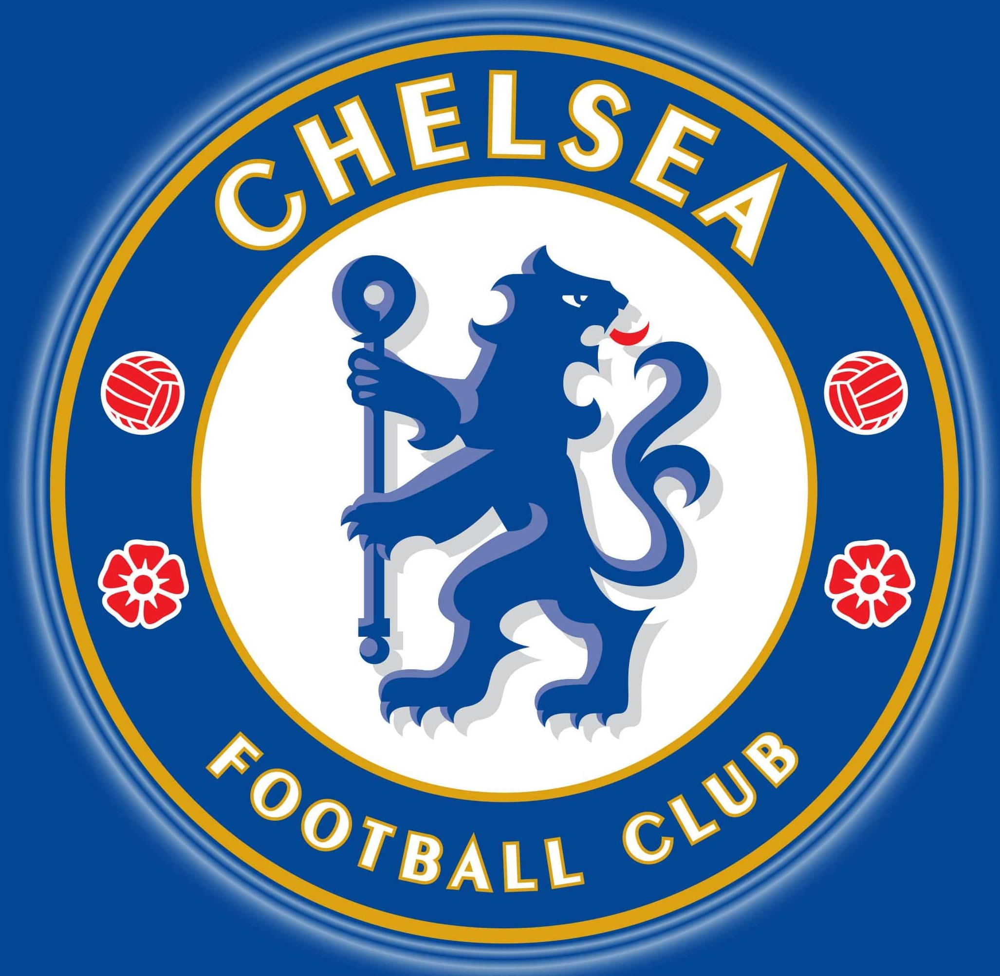

Chelsea Football Club is an English professional football club based in Fulham, West London. Founded in 1905, they play their home games at Stamford Bridge.[5] The club competes in the Premier League, the top division of English football. They won their first major honour, the League championship, in 1955. The club won the FA Cup for the first time in 1970, their first European honour, the Cup Winners' Cup, in 1971, and became the third English club to win the Club World Cup in 2022.
Chelsea's recent accolades
Chelsea reached the FA Cup final, losing 1–0 to Leicester City, and won their second UEFA Champions League title with a 1–0 win over Manchester City in Porto.